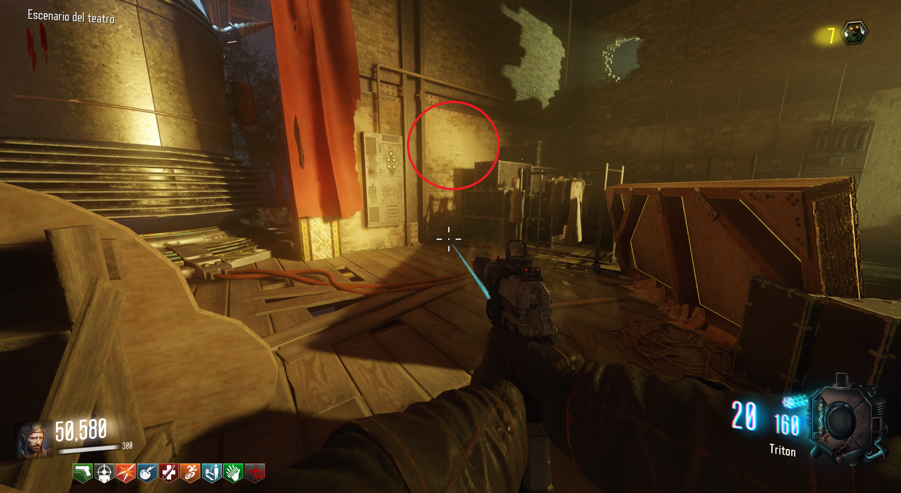

Con esto podremos desbloquear la Thomson de pared y podremos intercambiar armas con otros jugadores en la mesa de Nach der Untoten.
Tiza:
Lo primero será ir a Der Eisendrachen y activar la gravedad para obtener la tiza. Se encuentra donde señala la imagen.
Después tendremos que mover escrituras con la tiza de un lado a otro en el siguiente orden.
1. Accionamos la de Der Eisendrachen.
2. La de Verrückt.
3. Escaleras de Nacht der Untoten que van al Jügger-Nog.
4. Las otras escaleras de Nacht que van a Mob of the Dead.
5. Pared de Mob of the Dead a Origins.

6. En Kino der Toten, detrás del teleporter.
7. Volveremos a la pared de Mob of the Dead
Hecho esto volveremos a la mesa de Nacht y podremos dejar armas y recogerlas más tarde. También desbloquearemos la Thomson de pared en Der Eisendrachen.